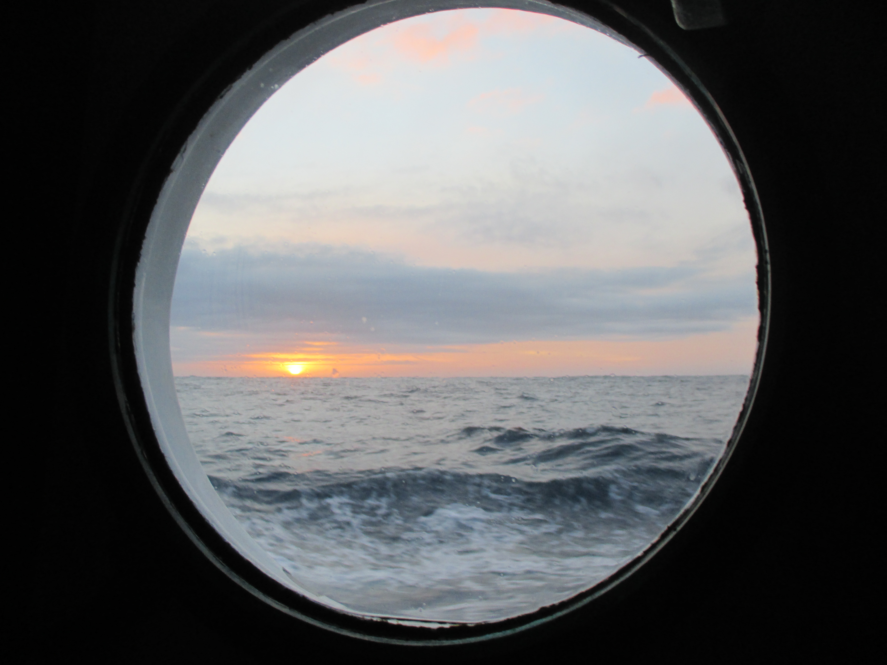
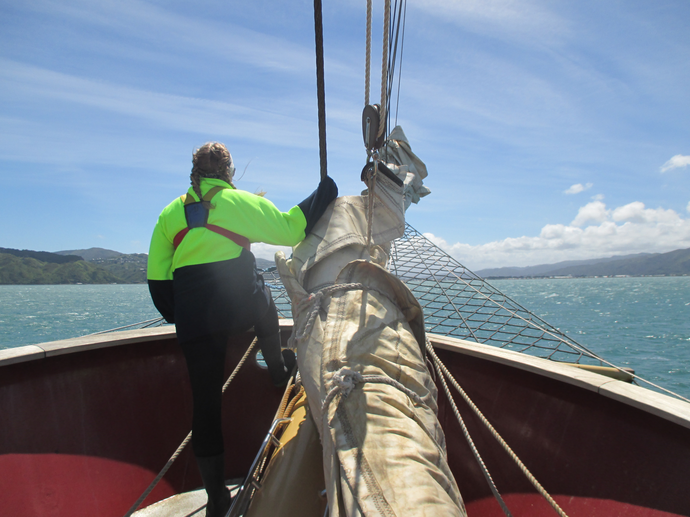
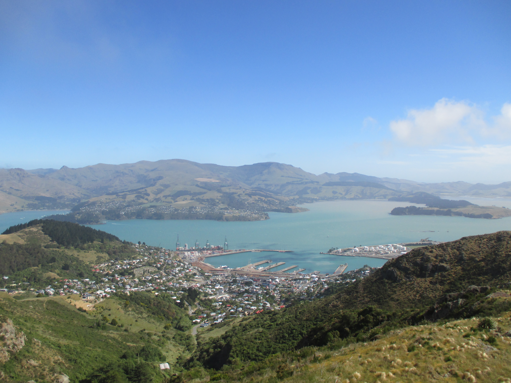

Science
I have six years of experience in the aquatic sciences, with my background ranging from ocean-based plastic research to freshwater geochemistry. Here are the roles I’ve taken on.
Graduate Research Assistant, University of Montana
I am wrapping up my master’s thesis at UM as I investigate characteristics of metal-containing particles in the Upper Clark Fork River (UCFR) with Dr. Ben Colman. My role has been multi-faceted as I complete a data analytics-intensive thesis, manage a long-term metal contamination monitoring project, and develop infrastructure for our newly minted lab group.
For my thesis research, Ben and I have been collaborating with Dr. Manuel Montaño (now at Western Washington University) in the application of single particle inductively coupled plasma time of flight mass spectrometry (spICP-TOFMS) to characterize the composition, particle size, and distribution of metal-containing particles in the UCFR. In the bigger picture, insights gleaned from this project could inform how we understand the toxicity and dynamics of metal contamination in impaired rivers like the UCFR.
Here is one of the first field work photos I took in the Clark Fork Basin.

Undergraduate Researcher, Washington State University Vancouver
I started with Dr. Gretchen Rollwagen-Bollens as an REU student in Aquatic Ecology lab during the summer of 2015. The project turned into an analysis of phytoplankton distributions in a spill-managed reservoir before and after a water drawndown event thanks to the opportunity to stay on with the lab through the remainder of my BS at WSUV. I was grateful to publish the research with Gretchen, Steve Bollens, and John Harrison at WSUV for my first lead-author paper in Lake and Reservoir Management. You can also read about the project in the Columbian.
Clean water specialist assistant with Clark County
During my undergraduate, I completed an internship that turned into an assistantship (part-time employment) for Clark County Public Works. I enjoyed learning the water resource management side of the picture and all of the community members I got to engage with.
Plastic surveys with Sea Education Association
I completed a study abroad program in New Zealand aboard a 135’ tall ship with SEA. While on-board, my team and I carried out a study on micro and macroplastic densities in the ocean. The ship was underway 24 hours per day (except when we were in port), meaning we didn’t stop sailing while out at sea. While underway we would have regular watch rotations and science stations, along with incredible sea life and expansive ocean. Obligatory pictures for beautiful experience.


